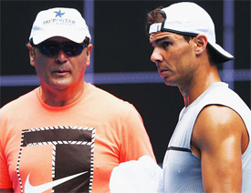
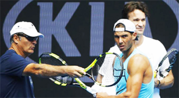
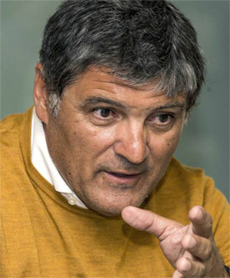
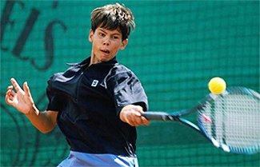
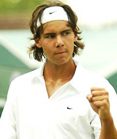
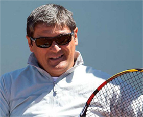

Previous: Gunther Bresnik | 🏠 Famous Coaches Home | Next: Overcoming Resistance
The Enigma of Toni Nadal
Comprehensive unified tennis knowledge base — Fundamentals, Stroke Analysis, Reference Library, and more
The Enigma of Toni Nadal
Chris Lewit

Toni Nadal: integral but who?
Toni Nadal has been integral in his nephew Rafael Nadal's development and career. But to the outside world he remains an enigmatic figure.
This is partly due to his reclusive and protective nature. No doubt he often presents a stern--even intimidating--face to those he doesn't know well.
But has the media really ever taken him seriously? The common, slightly dismissive media moniker, "Uncle Toni" belies who Toni Nadal actually is.
Those who know him respect his intellect and his integrity and especially his tenacity in helping to build one of the greatest players of all time.
First, Toni is a serious student of the game. True, he values his privacy and closely guards secrets he believes have led to Rafa's incredible success. But he is also known to light up in laughter in unguarded private moments—a side of his character the world never sees.
Now Toni Nadal is stepping down as full time coach and will not be traveling with Rafa after this season and is assuming a larger role in Rafa’s academy on Mallorca.
Why? According to Toni, "Until Rafa was 17 I decided everything, then the agent Carlos Costa came, his father got closer and everybody had his own opinion."
"And the truth is that every year I decide even less, until the point that I won´t decide anything anymore.
"I travelled with Rafa for many years, now I want to deal with the training of the young people and our academy is the ideal place." Translation: Toni Nadal wants to be where Toni Nadal can be Toni Nadal.

With additional influences, Toni is no longer the force he was in the early stages of Rafa’s career.
Who is Toni Really?
So who is Toni really? I was fortunate to spend some time with Toni during my visit to the new Rafa Nadal Academy in Mallorca (Click Here) and interview him about his views of the modern game and player development.
I found our discussion eye-opening and would like to share what I saw and learned. In retrospect his decision to leave seems consistent with everything I learned from Toni in my time there.
First and foremost Toni lives by a strict moral code. "Even if the world is finished tomorrow, I do the right thing--that's values. Values affect everyone and everything in the world."
Based on this core belief, Toni has created a six point development model for the players he oversees at the academy. Here is my interpretation of these points, based on talking to Toni and on other reading and research into his thoughts.

Toni lives by a strict code—one that he is teaching at Rafa’s Academy.
Humility
The value of humility is very commonly taught in Spanish tennis, as I discussed in my book, The Secrets of Spanish Tennis (Click Here.) "Humble is the way you have to be, period," Toni says.
"Everybody should know their place in the world. The point is that the world is quite big enough already without you imagining that you're big too."
Rafa himself has stated that humility is a key component in his motivation and competitiveness because his humility never allows him to overestimate an opponent and become complacent going into battle.
Obstacles
Toni believes that life in general has gotten faster, and that children and sometimes parents expect instant results. But for Toni, the things that have the most value in life are difficult and take a long time to achieve. Having the perseverance to overcome obstacles is a very important value, and overcoming challenges is what helps to build a strong character.
Respect
Toni believes that if you respect others, you will be happier in life and happier on the difficult journey towards becoming a champion.
"Respect for other people, for everyone irrespective of who they might be, or what they might do, is the starting point of everything," according to Toni. "What is not acceptable is that people who have had it all in life should behave coarsely with other people.
"No, the higher you are, the greater your duty to treat people with respect."

How did the values Toni espouses effect the young Rafa?
Patience
Patience is also a common value taught to players in Spain. For Toni, players must of course be patient on the court to develop their games. One must never become impatient on the long and difficult journey towards achieving greatness. Patience is what leads to persistence.
Tolerance
Tolerance for Toni is connected to the value of respect. People in life who have a high tolerance of those around them are also more respectful. They are more peaceful, and happier in their lives.
But Toni also believes tolerance is an important character trait in tennis champions. Tolerance determines how a player handles the stress and mental and emotional challenges of the battle of tennis competition.
Strong players are able to tolerate more stress and pressure than weaker players. So tolerance is interwoven with the concept of self-control.
Toni says, "Self-control is critical to becoming a champion. A player must control his mind and body and his emotions. Without this, he cannot control the ball."
Fighting Spirit
For Toni, fighting spirit means being willing to "suffer". Sometimes he calls it "enduring."
Toni believes champions must endure and suffer--they must fight to the end to achieve greatness.

Fighting spirit means never cave in.
Rafa says his uncle taught him this: "Endure, put up with whatever comes your way, learn to overcome weakness and pain, push yourself to the breaking point, but never cave in. If you don't learn that lesson, you'll never succeed as an elite athlete."
These six core values are the infrastructure around which a coach can build a champion's mind and spirit, one that dominates without making excuses. Above all else, Toni says, "Champions must find solutions, not excuses. Whining and complaining never helped us win a match or championship."
Three Principles of Player Development
In addition to his model of six core values for players, Toni has also summarized his player development philosophy with the following three principles: Technique, Character, and Propriety.
Technique
Technique for Toni Nadal, means developing all the skills a player needs to control the ball and to make the ball go where he or she wants. For Toni, this does not mean the strokes have to be perfect--far from it.
He has always emphasized being able to put the ball where a player wants and finding the right skills for a player's personality and style--a practical approach to technical development, rather than forcing every player to achieve some abstract perfect form.
"But what is that, technique? Is it hitting the ball very hard and with a beautiful movement but once out of every two hits, it lands outside the court? Is it to have a very good forehand, a very good serve but no backhand? No. For me, technique is about being able to place the ball wherever you want it to land no matter what shot."
Is technique about beautiful movement?
Character
Character, for Toni, very simply means working relentlessly towards achieving one's goals. He states, "A well-formed character is one that has been prepared to withstand the harshness of daily effort, the will, the development of self-improvement capabilities, and, not least, the enthusiasm to do so."
Character relates directly to: Overcoming Obstacles, Patience, and Fighting Spirit.
Propriety
Toni Nadal believes that propriety--respect and good manners--is critical to achieving a happy life and good performance on the court. He says, "Respect and good manners bring happiness in one's life."
For Toni, this happiness and satisfaction is just as important as the pursuit of goals and professional success. He concludes, "It is much easier to be happy with a carefully prepared performance and with a job that does not neglect these things that make us human."
Propriety relates directly to the value of Respect. Additionally, propriety is interlinked with the value of Tolerance. Propriety, for Toni, equates to control, an important concept in Spanish tennis training. He doesn't believe a player can truly master the game and control the ball without first gaining control of his or her emotions, to tolerate the pressures and stress of battle on the court.
Work System

Toni’s way: a path to better world citizens?
Toni says the speed of the modern game has become almost unbelievable. He says, "The game is evolving and getting faster, and in our training we must be flexible and adaptable." He continues to place great emphasis on the traditional Spanish value of moving well with quick footwork while breaking tradition in some respects.
Surprisingly, Toni advocates training on faster hard courts, when most of his Spanish coaching compatriots value clay. And he's not afraid to instruct his students to attack--breaking the traditional Spanish mindset obsessed with defense.
He also believes that players should own all the shots, developing a complete game with multiple ways to hurt an opponent. Toni put it this way, "When I first got on tour, there were players with flaws--now everyone can do everything!"
For Toni, developmental coaches must be similarly flexible and adapt to the individual--he has no tolerance for rigid systems or dogma. He asserts, "Every player is different and there is no 'only way'."
Citizens of the World
Reflecting on our talk, I realized that Toni Nadal's system was not only a powerful way to develop good tennis players, but it was a pathway to develop good human beings and a better society. To me, this is part of the genius of his approach and the value his principles hold for others, whether they be coaches or parents. Toni himself has said, "It is more important to be a good person than a good player."

Chris Lewit, former #1 for Cornell and Pro Circuit player, has coached numerous top 10 nationally ranked juniors and is a leading coach, educator, and author. He has written two best-selling books, The Secrets of Spanish Tennis and The Tennis Technique Bible.
Chris runs a popular high performance summer tennis camp in the beautiful mountains of Vermont and coaches players world-wide through his virtual school, CLTA Online (CLTA.teachable.com).
Chris also produces a weekly high performance tennis video talk show and podcast, The Prodigy Maker Show, which is available on Apple Podcasts and all other podcasting directories. All shows can be accessed at ProdigyMaker.com.
Check out Chris's blog, also at ProdigyMaker.com for free articles on high performance junior development and Spanish training. Learn about his camp at ChrisLewit.com or visit the online academy at CLTA.teachable.com
Source: tennisplayer.net archive — The Enigma of Toni Nadal.docx (John Yandell teaching library, 2002-2022). Extracted and rendered as HTML for Tennis Future Lab.